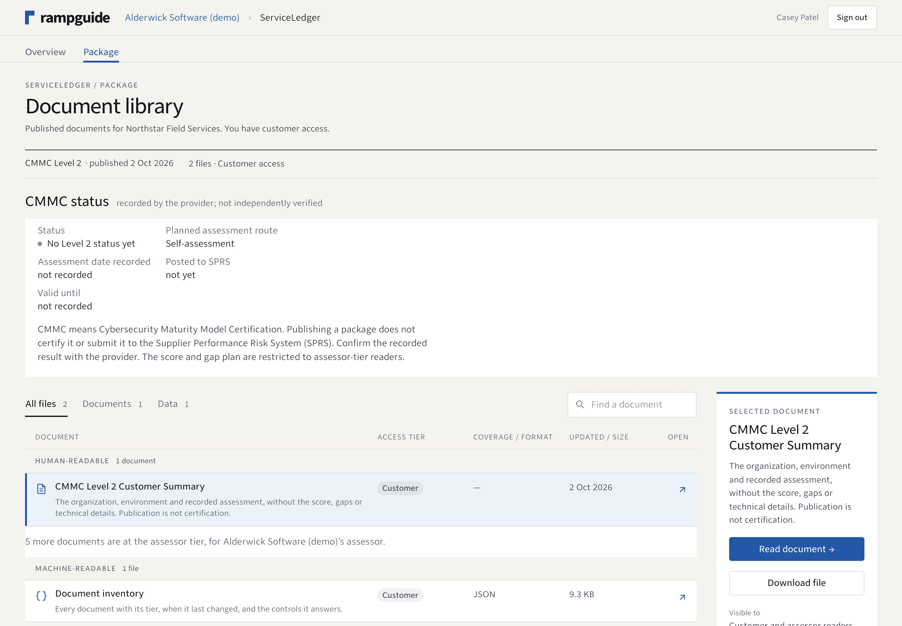
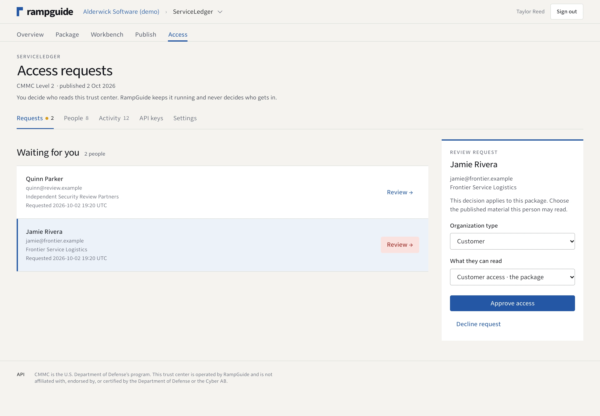
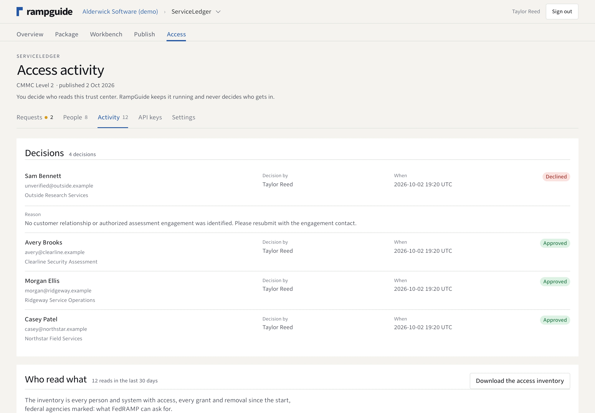

Request and verify.
Readers identify themselves and verify their email. Owners review requests and decide whether to grant access.
Trust center
Give customers, agencies and assessors a place to review published material. Keep unfinished work in your team’s workspace.

Screens captured from the working application on October 2, 2026. Alderwick Software / ServiceLedger is an entirely fictional demo scenario; people, architecture, safeguards and results are fictional. No customer relationship, assessment or certification is implied.
Readers identify themselves and verify their email. Owners review requests and decide whether to grant access.
A reading tier controls the available files. In this CMMC demo, customers see a summary; assessors can also read technical details, calculated readiness and gaps.
Review access decisions and file-reading activity. Preserve published snapshots when an earlier edition needs to remain available.
Inside the owner’s workspace
Review a requester’s organization and purpose. Choose a permitted tier or turn down the request with a reason. Staff editing roles are managed separately.

A visible history
Decisions retain the person who made them and their reason. Reading activity records access to published files. A snapshot preserves an earlier package edition.

Publication is not certification
The trust center shows provider-recorded assessment information separately from the publication date. This demo has published documents and no recorded CMMC assessment.
RampGuide does not independently verify a provider’s safeguards or assessment result. It does not grant an authorization or certification, or post to SPRS.
From answers to a published package